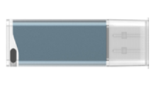

【注意事项】该功能为单服务端（VA）单客户端（屏幕嵌入控件使用者）设计。请勿接入多个客户端，或同时打开多个VA进程。
【注意事项】使用该功能时，VA和客户端软件均需要以管理员身份运行。
【注意事项】该功能传输图片时会占用运行时间，不需要嵌入功能请将配置项删掉（下文System路径下的VisionAssemblyEmbedded.gcfg）
Step1：注册屏幕嵌入插件
接口：控制工程启动
接口：控制工程运行
接口：控制工程停止